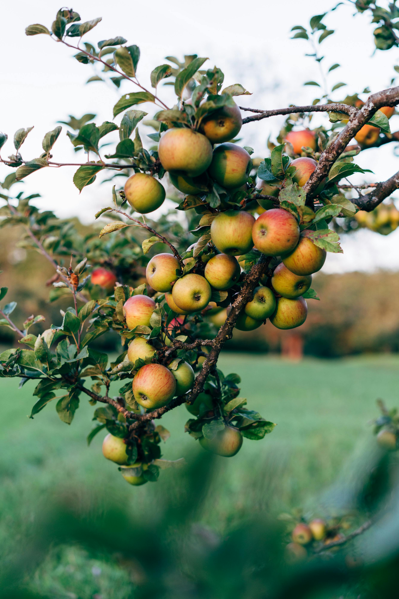
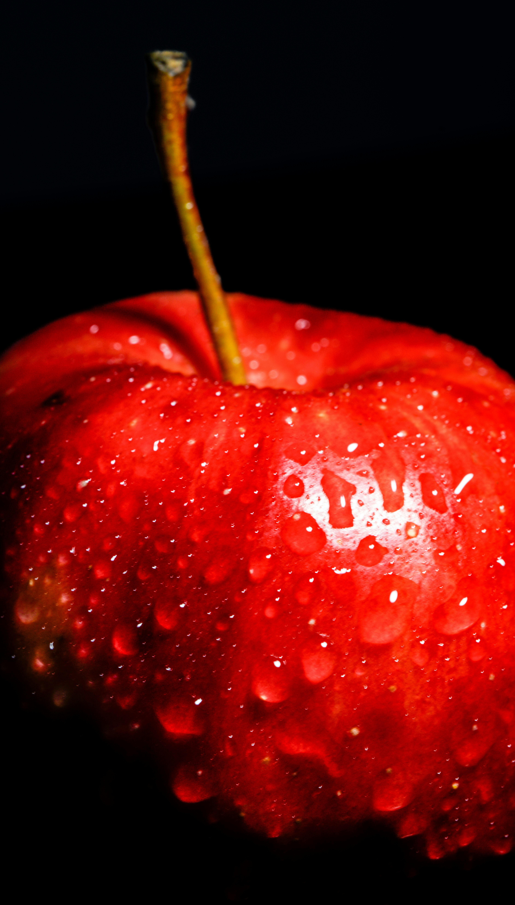
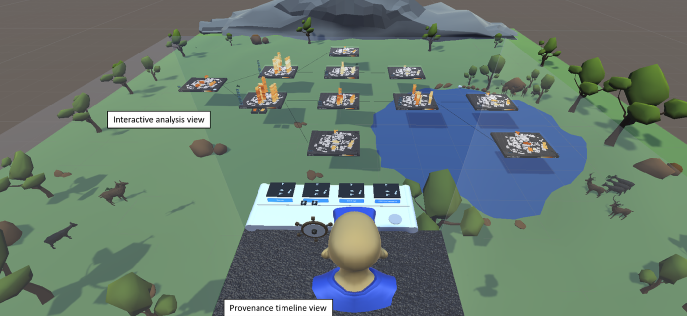
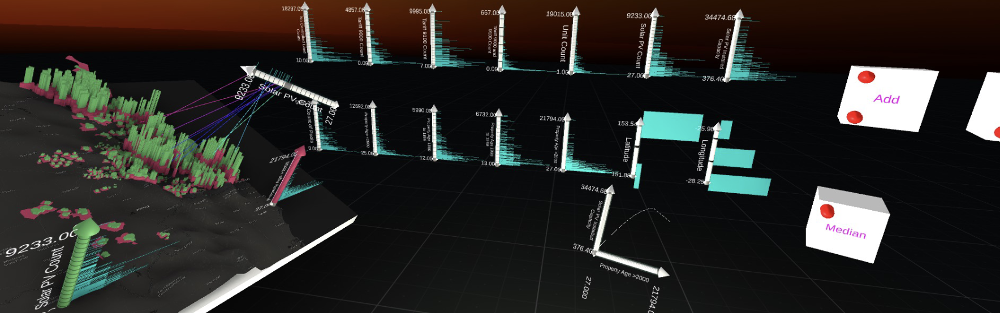
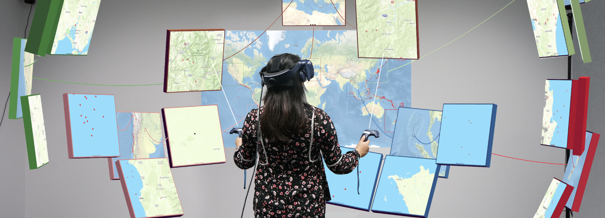
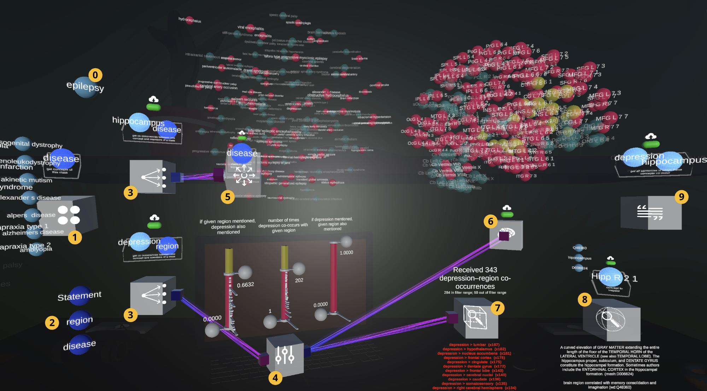
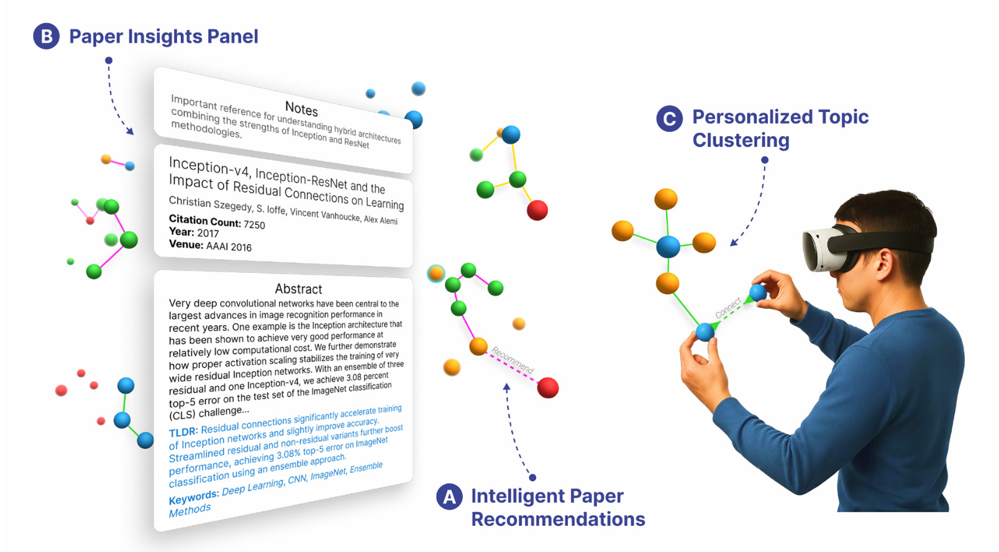
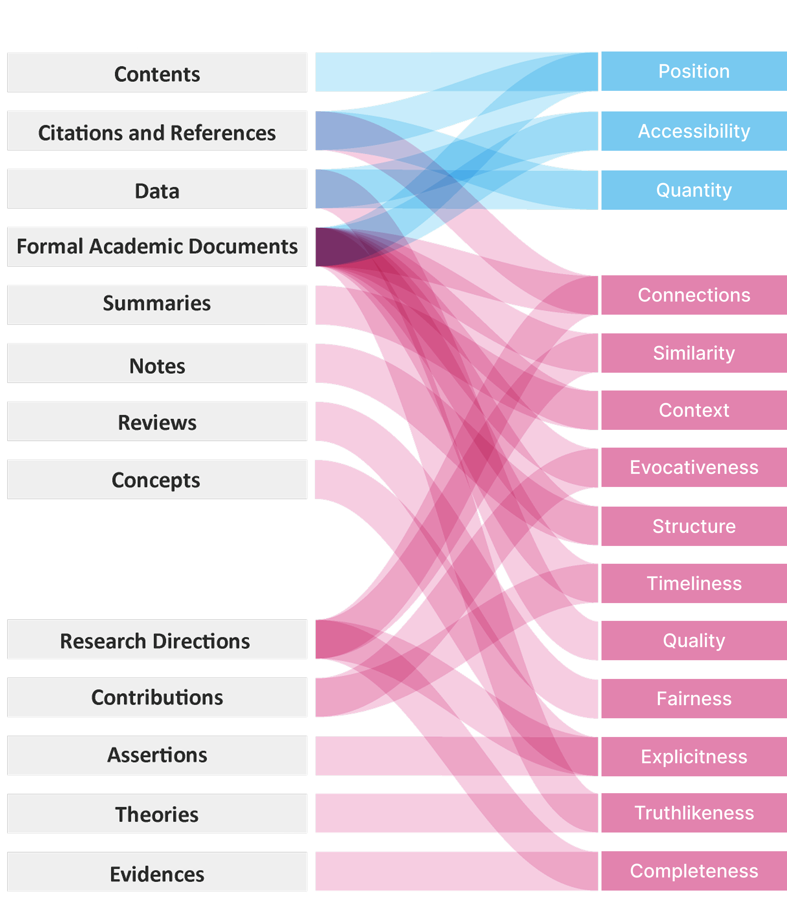

Same apple appears smooth to the touch
but variegated in color to the sight.
- Sextus Empiricus
Scholarly sensemaking, such as in-depth literature reviewing and problem formulation, is essential for research, but it has traditionally been conducted through text-heavy interfaces like Google Docs, RoamResearch, and Zotero. Furthermore, abstract and qualitative scholarly information, such as quotes, claims, and evidence, is difficult to materialize in forms other than text. However, text does not inherently support the perception of abstract properties of information that researchers are particularly interested in (e.g., qualities, connections, fairness). In this demonstration, we present our design exploration of an extended reality (XR) system that enhances the “sense-ability” of immaterial properties of information to enhance scholarly sensemaking. This design proposes instability as a sensemaking affordance within an immersive sensemaking system, enabling users to quickly identify weaknesses in arguments.
Same apple appears smooth to the touch
but variegated in color to the sight.
- Sextus Empiricus
The way we make sense of information are shaped by the modalities of how we perceive them.
A colorful image of an apple provides valuable information about its variety, ripeness, and the environment in which it is located.
Despite the absence of visual cues, the haptic sensory information from our hand can intuitively provide us with an immediate assessment of the freshness of an apple based on its texture and firmness.
Conversely, some other modalities varies our ability to process information.
Plain text for instance, conveying the same amount of information of an apple through it would result in an increase in the length of articulation and require extended human cognitive effort to comprehend.
“The groundcolor of ripe apples is yellow, green, yellow-green or whitish yellow. The overcolor of ripe apples can be orange-red, pink-red, red, purple-red or brown-red. The overcolor amount can be 0–100%. The skin may be wholly or partly russeted, making it rough and brown. The skin is covered in a protective layer of epicuticular wax. The skin may also be marked with scattered dots. The flesh is generally pale yellowish-white, though it can be pink, yellow or green.”
- Wikipedia.com
“In the orchards piles of red and of yellow apples shone in the sunlight, and when one still depended from the tree it was as bright as a gilt ball on a Christmas-tree.”
- Frank Bolles, At the North of Bearcamp Water
“The window panes reflected apples, reflected roses; all the leaves were green in the glass. If they moved in the drawing room, the apple only turned its yellow side.”
- Virginia Woolf, A Haunted House in Monday or Tuesday

“Early apples begin to be ripe about the first of August; but I think that none of them are so good to eat as some to smell. One is worth more to scent your handkerchief with than any perfume which they sell in the shops. The fragrance of some fruits is not to be forgotten, along with that of flowers.” - Henry David Thoreau, Wild Apples
“he boy is indeed the true apple-eater, and is not to be questioned how he came by the fruit with which his pockets are filled. It belongs to him…His own juicy flesh craves the juicy flesh of the apple. Sap draws sap. His fruit-eating has little reference to the state of his appetite. Whether he be full of meat or empty of meat he wants the apple just the same. Before meal or after meal it never comes amiss. The farm-boy munches apples all day long.” - John Burroughs, Birds and Bees
“The window panes reflected apples, reflected roses; all the leaves were green in the glass. If they moved in the drawing room, the apple only turned its yellow side.”
- Virginia Woolf, A Haunted House in Monday or Tuesday
“In the orchards piles of red and of yellow apples shone in the sunlight, and when one still depended from the tree it was as bright as a gilt ball on a Christmas-tree.”
- Frank Bolles, At the North of Bearcamp Water
“The groundcolor of ripe apples is yellow, green, yellow-green or whitish yellow. The overcolor of ripe apples can be orange-red, pink-red, red, purple-red or brown-red. The overcolor amount can be 0–100%. The skin may be wholly or partly russeted, making it rough and brown. The skin is covered in a protective layer of epicuticular wax. The skin may also be marked with scattered dots. The flesh is generally pale yellowish-white, though it can be pink, yellow or green.”
- Wikipedia.com
“The groundcolor of ripe apples is yellow, green, yellow-green or whitish yellow. The overcolor of ripe apples can be orange-red, pink-red, red, purple-red or brown-red. The overcolor amount can be 0–100%. The skin may be wholly or partly russeted, making it rough and brown. The skin is covered in a protective layer of epicuticular wax. The skin may also be marked with scattered dots. The flesh is generally pale yellowish-white, though it can be pink, yellow or green.”
- Wikipedia.com
“he boy is indeed the true apple-eater, and is not to be questioned how he came by the fruit with which his pockets are filled. It belongs to him…His own juicy flesh craves the juicy flesh of the apple. Sap draws sap. His fruit-eating has little reference to the state of his appetite. Whether he be full of meat or empty of meat he wants the apple just the same. Before meal or after meal it never comes amiss. The farm-boy munches apples all day long.”
- John Burroughs, Birds and Bees

“he boy is indeed the true apple-eater, and is not to be questioned how he came by the fruit with which his pockets are filled. It belongs to him…His own juicy flesh craves the juicy flesh of the apple. Sap draws sap. His fruit-eating has little reference to the state of his appetite. Whether he be full of meat or empty of meat he wants the apple just the same. Before meal or after meal it never comes amiss. The farm-boy munches apples all day long.”
- John Burroughs, Birds and Bees
“Early apples begin to be ripe about the first of August; but I think that none of them are so good to eat as some to smell. One is worth more to scent your handkerchief with than any perfume which they sell in the shops. The fragrance of some fruits is not to be forgotten, along with that of flowers.” - Henry David Thoreau, Wild Apples
“In the orchards piles of red and of yellow apples shone in the sunlight, and when one still depended from the tree it was as bright as a gilt ball on a Christmas-tree.”
- Frank Bolles, At the North of Bearcamp Water
“The apple is a sturdy tree. Short of trunk and short of continuous limb, it is yet a stout and rugged object, the indirectness of its branching branches adding to its picturesque quality. It is a tree of good structure. Although its limbs eventually arch to the ground, if left to themselves, they yet have great strength. The angularity of the branching, the frequent forking, the big healing or hollow knots with rounding callus-lips, give the tree character.”
- L. H. Bailey, The Apple-Tree
“In the orchards piles of red and of yellow apples shone in the sunlight, and when one still depended from the tree it was as bright as a gilt ball on a Christmas-tree.”
- Frank Bolles, At the North of Bearcamp Water
“In the orchards piles of red and of yellow apples shone in the sunlight, and when one still depended from the tree it was as bright as a gilt ball on a Christmas-tree.”
- Frank Bolles, At the North of Bearcamp Water
“In the orchards piles of red and of yellow apples shone in the sunlight, and when one still depended from the tree it was as bright as a gilt ball on a Christmas-tree.”
- Frank Bolles, At the North of Bearcamp Water
Scholarly sensemaking is the process through which researchers synthesize scattered pieces of information into novel insights and research directions. Much of this work is currently conducted through text, which serves as the primary medium for processing, organizing, and communicating scholarly information. However, we speculate that text need not be the only modality through which researchers make sense of scholarly information.
Researchers have proposed an extended number of applications to translate quantitative and inherently geo-spatial information into modalities that is different from text.

Yidan Zhang, Barrett Ens, Kadek Ananta Satriadi, Ying Yang, and Sarah Goodwin. 2023. Embodied Provenance for Immersive Sensemaking. Proceedings of the ACM on Human-Computer Interaction 7, ISS: 198–216.

Andrew Cunningham, Jonathon Derek Hart, Ulrich Engelke, Matt Adcock, and Bruce H. Thomas. 2021. Towards Embodied Interaction for Geospatial Energy Sector Analytics in Immersive Environments. Proceedings of the Twelfth ACM International Conference on Future Energy Systems, ACM, 396–400.

Kadek Ananta Satriadi, Barrett Ens, Maxime Cordeil, Tobias Czauderna, and Bernhard Jenny. 2020. Maps Around Me: 3D Multiview Layouts in Immersive Spaces. Proceedings of the ACM on Human-Computer Interaction 4, ISS: 1–20.

Ivar Troost, Ghazaleh Tanhaei, Lynda Hardman, and Wolfgang Hürst. 2021. Exploring Relations in Neuroscientific Literature using Augmented Reality: A Design Study. Designing Interactive Systems Conference 2021, ACM, 266–274.

Haoyang Yang, Elliott H. Faa, Weijian Liu, Shunan Guo, Duen Horng Chau, and Yalong Yang. 2025. LitForager: Exploring Multimodal Literature Foraging Strategies in Immersive Sensemaking. Retrieved August 22, 2025 from http://arxiv.org/abs/2508.15043.
Yet most of these alternative modalities are still limited to representing qualitative information that is difficult to quantify or not inherently geospatial, even as advances in large language models now make it possible to process qualitative information rapidly and at scale.
Through a systematic literature review, we identified that not all qualitative scholarly information are materialized in a stable format (e.g., research directions, theories) and not all critical properties of scholarly informations are tangible enough for researchers to sense directly (e.g., context, turthlikeness, completeness, exovacativeness)[1].
For example, Structure describes relations between internal elements of information objects. Formal academic documents have structures for their contents. Scholars’ notes can also be “under-structured” or “overly structured”. The property structure also describes a hierarchical relationship (e.g., “a tree of”, “branches of”, and “hierarchical”).
Quality represents the strength of an information object. Immaterial information objects like research works and research ideas have this property. For example, if research work is low in quality, it might be described as a “reluctant study”. On the other hand, if an idea is high in quality, it may be described as having “value” or being “creative and unique”.
[1] Zhu, S. and Chan, J. 2025. Sense and Sensability: Exploring Future Immersive Environments for Scholarly Sensemaking. Proceedings of the 2025 Conference on Creativity and Cognition (New York, NY, USA, June 2025), 886–901.

How can we offer an alternative modality to support sensing immaterial scientific information that text alone is insufficient for making sense of it?
Our current design hypothesis is
instability.
A researcher whose work focuses on K–12 education is conducting an interview study to investigate how recent developments in AI affect student learning. The study aims to identify guidelines that educators can use to promote responsible AI use in educational settings. Over the past few months, the researcher has collected 30 closely related empirical studies and conducted a pilot interview study with five K–12 teachers. They plan to share their preliminary findings at a conference whose paper submission deadline is in two weeks.
Given limited time and manpower, the researcher wants to identify which parts of their emerging theory or guideline are weakly supported, logically unclear, or contradicted by evidence as they synthesize findings from prior studies and pilot interviews.
When a researcher grab one entity and put it on another similar entity, the two entity will merge together, connecting two statements together.
When a researcher hypothesizes that their might be some relation between two entities, they can drag to make a hypothetical connection between two entities.
When a researcher connects two seemingly comparable statements that cannot be generalized from one to the other, the system will create an uncomfortable oscillating movement to indicate the instability caused by this weak connections.